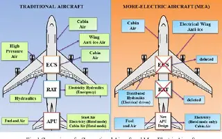

Licence 3
Projet de recherche – Défauts électriques dans les réseaux embarqués aéronautiques
Université de Toulouse (Paul Sabatier) · Toulouse, France
- Recherche bibliographique sur les arcs électriques dans les réseaux embarqués
- Étude des arcs électriques dans les réseaux embarqués